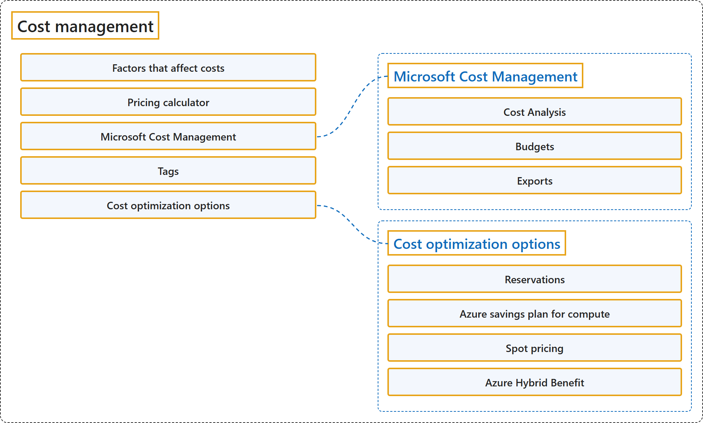

20.1 Cost Management
Classification

Glossary
| Term | Definition | 中文翻译 | Source |
|---|---|---|---|
| Cost management 成本管理 |
"This module explores methods to estimate, track, and manage costs in Azure." | 本模块探讨在 Azure 中估算、跟踪和管理成本的方法。 | Microsoft, 2026a, "Describe cost management in Azure" module |
| Factors that affect costs 影响成本的因素 |
(context) "A number of factors influence the cost of Azure resources. The type of resources, the settings for the resource, and the Azure region will all have an impact on how much a resource costs." | （语境）许多因素会影响 Azure 资源的成本。资源的类型、资源的设置和 Azure 区域都会影响资源的费用。 | Microsoft, n.d.-b, "Resource type" section, para. 1 |
| Pricing calculator 定价计算器 |
"The Azure pricing calculator helps you turn anticipated usage into an estimated cost, which makes it easier to plan and budget for your Azure usage." | Azure 定价计算器帮助你把预期用量转换为估算成本，从而更容易为 Azure 用量做计划和预算。 | Microsoft, 2025a, para. 1 |
| Microsoft Cost Management Microsoft 成本管理 |
"Microsoft Cost Management is a suite of FinOps tools that help organizations analyze, monitor, and optimize their Microsoft Cloud costs." | Microsoft 成本管理是一套 FinOps 工具，帮助组织分析、监视和优化 Microsoft 云成本。 | Microsoft, 2025f, para. 1 |
| Cost Analysis 成本分析 |
"Cost Analysis is your tool for interactive analytics and insights. It should be your first stop when you need to explore or get quick answers about your costs." | Cost Analysis 是你用于交互式分析和洞察的工具。当你需要探索成本或快速得到成本问题的答案时，它应该是你的第一站。 | Microsoft, 2025b, "Get started" section, para. 1 |
| Budgets 预算 |
"Budgets in Cost Management help you plan for and drive organizational accountability. They help you proactively inform others about their spending to manage costs and monitor how spending progresses over time." | Cost Management 中的预算帮助你做好规划并推动组织的责任落实。它们帮助你主动告知他人其支出情况以管理成本，并监视支出随时间的进展。 | Microsoft, 2025c, para. 1 |
| Exports 导出 |
"However, you can create a recurring task that automatically exports your Cost Management data to Azure storage on a daily, or monthly basis." | 不过，你可以创建一个定期任务，按天或按月自动把 Cost Management 数据导出到 Azure 存储。 | Microsoft, 2025d, para. 1 |
| Tags 标记 |
"Tags are metadata elements that you apply to your Azure resources. They are key-value pairs that help you identify resources based on settings that are relevant to your organization." | 标记是你应用到 Azure 资源上的元数据元素。它们是键值对，帮助你根据与组织相关的设置识别资源。 | Microsoft, 2025e, para. 1 |
| Cost optimization options 成本优化选项 |
(context) "After estimating and monitoring costs, the next step is choosing the right pricing option for each workload profile." | （语境）在估算和监视成本之后，下一步是选择合适的定价选项，针对每种工作负载特征。 | Microsoft, n.d.-a, para. 1 |
| Reservations 预留 |
"Reservations are best for stable, predictable workloads. You commit to specific resource capacity for a one-year or three-year term, and Azure applies discounted pricing to matching usage." | 预留最适合稳定、可预测的工作负载。你承诺在一年或三年期限内使用特定的资源容量，Azure 则对匹配的用量应用折扣价格。 | Microsoft, n.d.-a, "Reservations" section, para. 1 |
| Azure savings plan for compute Azure 计算节省计划 |
"Azure savings plan for compute is another commitment-based option for compute services. Instead of committing to a specific VM family or instance type, you commit to an hourly spend amount for one or three years, and savings are applied to eligible compute usage." | Azure 计算节省计划是另一种基于承诺的计算服务选项。你不是承诺某个特定的 VM 系列或实例类型，而是承诺一年或三年内每小时的支出金额，节省会应用到符合条件的计算用量上。 | Microsoft, n.d.-a, "Azure savings plan for compute" section, para. 1 |
| Spot pricing 现成定价 |
"Spot Virtual Machines use unused Azure capacity at reduced prices. Spot is most appropriate for interruptible workloads because Azure can reclaim that capacity when needed." | 现成虚拟机以更低的价格使用 Azure 未使用的容量。现成定价最适合可中断的工作负载，因为 Azure 可以在需要时收回这些容量。 | Microsoft, n.d.-a, "Spot pricing" section, para. 1 |
| Azure Hybrid Benefit Azure 混合权益 |
"Azure Hybrid Benefit an Azure discount that helps you to significantly reduce the costs of running your workloads in the cloud. It works by letting you use your on-premises Software Assurance or subscription-enabled Windows Server and SQL Server licenses on Azure." | Azure 混合权益是一种 Azure 折扣，帮助你大幅降低在云中运行工作负载的成本。它的做法是让你在 Azure 上使用本地带 Software Assurance 或已启用订阅的 Windows Server 和 SQL Server 许可证。 | Microsoft, 2026b, para. 1 |
References
- Microsoft. (n.d.-a). Describe cost optimization options in Azure [Training module unit]. Microsoft Learn. Retrieved October 27, 2026, from https://learn.microsoft.com/en-us/training/modules/describe-cost-management-azure/7a-describe-cost-optimization-options
- Microsoft. (n.d.-b). Describe factors that can affect costs in Azure [Training module unit]. Microsoft Learn. Retrieved October 27, 2026, from https://learn.microsoft.com/en-us/training/modules/describe-cost-management-azure/2-describe-factors-affect-costs-azure
- Microsoft. (2025a, July 21). Estimate costs with the Azure pricing calculator. Microsoft Learn. https://learn.microsoft.com/en-us/azure/cost-management-billing/costs/pricing-calculator
- Microsoft. (2025b, June 27). Quickstart: Start using Cost Analysis. Microsoft Learn. https://learn.microsoft.com/en-us/azure/cost-management-billing/costs/quick-acm-cost-analysis
- Microsoft. (2025c, June 26). Tutorial: Create and manage budgets. Microsoft Learn. https://learn.microsoft.com/en-us/azure/cost-management-billing/costs/tutorial-acm-create-budgets
- Microsoft. (2025d, June 26). Tutorial: Create and manage Cost Management exports. Microsoft Learn. https://learn.microsoft.com/en-us/azure/cost-management-billing/costs/tutorial-improved-exports
- Microsoft. (2025e, September 15). Use tags to organize your Azure resources and management hierarchy. Microsoft Learn. https://learn.microsoft.com/en-us/azure/azure-resource-manager/management/tag-resources
- Microsoft. (2025f, June 27). What is Microsoft Cost Management. Microsoft Learn. https://learn.microsoft.com/en-us/azure/cost-management-billing/costs/overview-cost-management
- Microsoft. (2026a). Introduction to cloud infrastructure: Describe Azure management and governance [Learning path]. Microsoft Learn. https://learn.microsoft.com/en-us/training/paths/describe-azure-management-governance/
- Microsoft. (2026b, July 17). What is centrally managed Azure Hybrid Benefit for SQL Server? Microsoft Learn. https://learn.microsoft.com/en-us/azure/cost-management-billing/scope-level/overview-azure-hybrid-benefit-scope